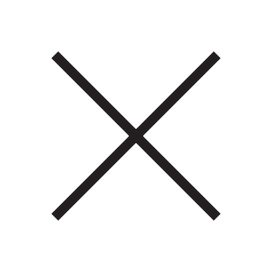

ALEX_MAGNÉ/
Sipradelle

La vidéo "Sipradelle" est un making'of réalisé pour accompagner le projet de fin d'année du grand Élie Loustau (création et défilé d'une série de vetements). Elle retrace le shooting de la collection. Le projet,comme la vidéo, a pour inspiration le travail à l'usine des années 60/70.